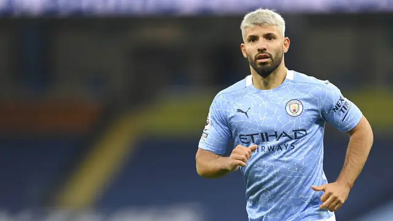
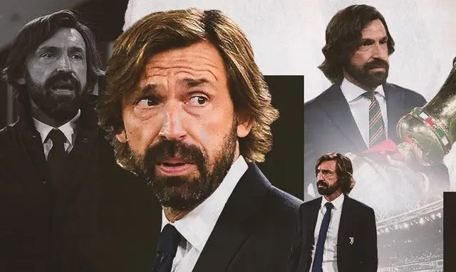

Author Admin Pada Kamis 21 Maret

Liga Inggris: Resmi Bercerai dengan Manchester City, Sergio Aguero Banjir Tribute dan Sanjungan
Lebersamaan Sergio Aguero dengan Manchester City dipastikan berakhir pada musim panas tahun ini. Berbagai tribute dan sanjungan diberikan untuk Aguero yang menorehkan prestasi mengilap bersama City.
Selengkapnya →
Author Admin Pada Kamis 21 Maret

Juventus Terpuruk, Andrea Pirlo Belum Siap Jadi Pelatih
Legenda sepak bola Italia, Claudio Gentile, enggan menyalahkan Andrea Pirlo atas buruknya performa Juventus pada musim ini.
Selengkapnya →
Author Admin Pada Kamis 21 Maret
3 Bintang Bhayangkara Solo FC yang Bisa Bikin Persija Gugur di Piala Menpora : Barisan Para Mantan
Bhayangkara Solo FC memiliki tiga pemain yang pernah berseragam Persija Jakarta. Akankah mereka jadi biang kegagalan Macan Kemayoran ke fase gugur Piala Menpora 2021?
Selengkapnya →Copyright © 2021 tianggawang.com